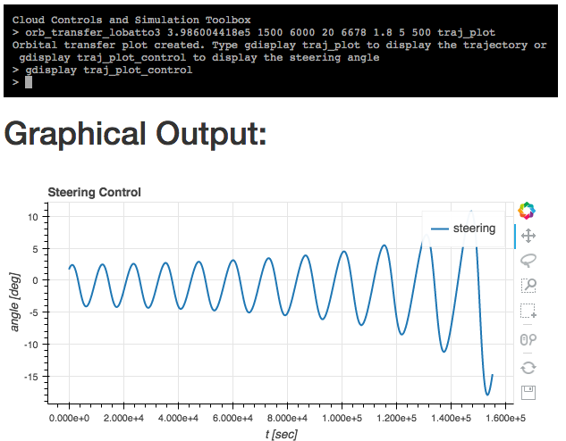

Native Support
Commands display and gdisplay are used to display stored
data to the console and graphical output displays respectively.
Octave - warning: temporarily available only with local install
Type octave to switch to Octave command prompt for entering octave commands (Matlab syntax).
At this point usual Octave commands will work. For example,
A = [1,2;3,4]
defines a matrix.
Leaving Octave using exit command returns to the CCST prompt.
To display the matrix we can type display A or gdisplay A with the latter
producing latex typeset rendering of the matrix in the graphical ouput pane.
Matrices can also be entered using the CCST with python type syntax: matrix [[1,2],[3,4]].
Controls System Commands
Let us analyze longitudinal dynamics representative of a transport aircraft, trimmed at $V_0 = 250$ ft/s and flying at a low altitude. The example is taken from 'Robust and Adaptive Control: With Aerospace Applications' by Eugene Lavretsky and Kevin Wise.
The linearized dynamics are given by the matrix
$$
A =
\begin{pmatrix}
-0.038 & 18.984 & 0 & -32.174 \\
-0.001 & -0.632 & 1 & 0 \\
0 & -0.759 & -0.518 & 0 \\
0 & 0 & 1 & 0
\end{pmatrix}
$$
To enter this matrix in CCST type matrix A '[[-0.038, 18.984, 0, -32.174], [-0.001,-0.632, 1, 0],
[0, -0.759, -0.518, 0], [0, 0, 1, 0]]'
We can enter gdisplay A to view the entered matrix in latex rendering under the terminal. In turn,
display A will display A in the console.
To calculate eigenvectors and eigenvalues of A enter the command modes A V E , where
the last two arguments specify the variables were the results will be stored.
Next, let us define a matrix $B$ with control derivatives as follows:
matrix B '[[10.1, 0], [0, -0.0086], [0.025, -0.011], [0,0]]'
Finally we will define two more matrices, $C$ and $D$ to complete our state space system with state feedback.
matrix C '[[1, 0, 0, 0], [0, 1, 0, 0], [0, 0, 1, 0], [0, 0, 0, 1]]'
matrix D '[[0, 0], [0, 0], [0, 0], [0, 0]]'
Next, we define the state system with the command ss A B C D G. The last argument
gives the name of the state system. We can now graphically display the system with gdisplay G
control 2 G elevator
output 2 G alpha
Now we can simulate the response to a 0.5 radian elevator deflection for 5 seconds with:
step alpha G elevator 0.5 5 alpha_plot and view the result with gdisplay alpha_plot.
For a closed-loop system we define a controller in a standard space-state form with the command:
controller A B1 B2 C D1 D2 K
and arrange $G$ and $K$ into a feedback loop with:
feedback G K G_cl
Here, again the last argument gives a name to the resulting closed loop system.
To obtain response to initial conditions we can use the command:
response alpha G '[[0],[0]]' '[[0]]', 5.0 closed_loop_plot
Here the second argument specifies the initial conditions and the third argument specifies the reference input.
Orbital Mechanics Toolbox
The toolbox uses C++ code under the hood.
Lambert's Problem
Consider a satellite to be located at $r_1 = 5000 \hat{I} + 10000 \hat{J} + 2100 \hat{K}$ km. We want to design a trajectory that will put the satellite at $r_2 = -14600 \hat{I} + 2500 \hat{J} + 7000 \hat{K}$ km after one hour. This is achieved by solving Lambert's problem, by calling
lambert '[5000, 10000, 2100]' '[-14600, 2500, 7000]' 3600 True 398600 orbit1
Here we specified the two positions, time, whether we want the prograde trajectory, $\mu$, and a name to save the results under. To see the orbital elements associated with the calculated orbit we simply type:
gdisplay orbit1
Optimal Circular Orbit Transfer
Consider establishing the optimal transfer trajectory to get from a given circular orbit around the earth to the largest radial position in a given amount of time using constant thrust and the thrust angle as the control. This problem can be posed as a classic optimal control problem of finding extrema of a functional of the form $$ J(\alpha) := \int_{t_0}^{t_f} L(t,x(t),\alpha(t)) \, dt + K(t_f, x_f), $$ where the running cost $L \equiv 0$ and the terminal cost $K := r(t_f)$ is the final radial position. Precisely,
$$ J = r(t_f), $$ subject to the classic two-body equations of motion in polar coordinates $$ \begin{align} \dot{r} & = u, \\ \dot{u} & = \frac{v^2}{r} - \frac{\mu}{r^2} + \frac{T \sin \alpha}{m_0 - |\dot{m}|t}, \\ \dot{v} & = -\frac{u v}{r} + \frac{T \cos\alpha}{m_0 - |\dot{m} t|}, \\ \dot{\theta} & = \frac{v}{r}, \end{align} $$where $r$ is the radial position of the vehicle, $u$ and $v$ are radial and tangential velocities, $T$ is the thrust applied at the angle of $\alpha$ radians. In addition, $m_0$ is the initial vehicle mass and $\dot{m}$ is the mass flow rate. (See James M Longuski, José J. Guzmán, John E. Prussing, Optimal Control with Aerospace Applications-Springer-Verlag New York (2014))
By the use of Pontryagin's Maximum Principle, this problem can be reduced to solving a boundary value problem $$ \begin{align} \frac{d \bar{r}}{d \tau} & = \bar{u} \eta, \\ \frac{d \bar{u}}{d \tau} & = \left( \frac{\bar{v}^2}{\bar{r} - \frac{1}{\bar{r}^2}} \right) \eta + \frac{\bar{T}}{m_0 - |\dot{m}| \tau t_f} \left( \frac{p_u}{\sqrt{p_u^2+p_{v}^2}} \right), \\ \frac{d \bar{v}}{d \tau} & = \frac{\bar{u}{\bar{v}}{\bar{r}}}\eta + \frac{\bar{T}}{m_0 - |\dot{m}| \tau t_f} \left( \frac{p_{v}}{\sqrt{p_u^2+p_{v}^2}} \right), \\ \frac{d \theta}{d \tau} & = \frac{\bar{v}{\bar{r}}} \eta, \\ \frac{d p_r}{d \tau} & = p_u \left(\frac{\bar{v}^2}{\bar{r}^2} -\frac{2}{\bar{r}^3} \right) \eta - p_{v} \frac{\bar{u}{\bar{v}}}{\bar{r}^2} \eta + \frac{p_{\theta} \bar{v}}{\bar{r}^2} \eta, \\ \frac{d p_u}{d \tau} & = -p_r \eta + \frac{p_{v} \bar{v}}{\bar{r}}, \\ \frac{d p_v}{d \tau} & = -\frac{2 p_u v \eta}{\bar{r}} + \frac{p_{v} u \eta}{\bar{r}} - {p_{\theta} \eta}{\bar{r}}, \end{align} $$ for the rescaled variables $$ \bar{r} = \frac{r}{r(0)}, \, \bar{u} = \frac{u}{v(0)}, \, \bar{v} = \frac{v}{v(0)}, \, \tau = \frac{t}{t_f}, $$ the co-states $p_r, p_{\theta}, p_u, p_v$ and subject to the boundary conditions $$ \begin{cases} \bar{r}_0(0) = 1, \, \bar{u}(0) = 0, \, \bar{v}(0)=1, \, \theta(0) = 0, \\ \bar{u}(1) = 0, \, \bar{v}(1) = \sqrt{1/\bar{r}(1)}, \, 1 - p_r(1) + \frac{1}{2} p_v(1) \sqrt{1/\bar{r}^3(1)} = 0, \, p_{\theta}(1) = 0 \end{cases} $$ To solve the problem with $\mu = 3.986004418e5$, initial mass $m_0 = 1500$ kg, specific impulse $I_{sp} = 6000$, thrust $T = 20$ N, initial orbit radius $6678$ km, final time $t_f = 0.5$ days, and using 5 hour timesteps and 500 grid points for each timestep we run
orb_transfer_lobatto3 3.986004418e5 1500 6000 20 6678 0.5 5 500 traj_plot
The above solves the problem using a three stage Lobatto collocation scheme. Similarly, we can run a more general collocation code by specifying the scheme at the end of the command. For example, to use a trapezoid scheme, $$ \begin{array}{c|cc} 0 & 0 & 0 \\ 1 & 1/2 & 1/2 \\ \hline & 1/2 & 1/2 \end{array} $$ we can enter
orb_transfer 3.986004418e5 1500 6000 20 6678 0.5 5 500 2 [0,1] [[0,0],[0.5,0.5]] [0.5,0.5] traj_plot
The resulting plots can be displayed with
gdisplay traj_plot and gdisplay traj_plot_control

Collocation Method
We consider a system of differential equations of the form $$ y' = f(t,y) $$ $$ g(y(a), y(b)) = 0$$ For fixed $t$ and $y$, let $A = \frac{\partial f}{\partial y}(t,y)$, $B_1 = \partial_1 g$, $B_2 = \partial_2 g$Uploading an Image
The first step is to upload an image to be analyzed. To do that expand the menu at the top right corner, above the console screen and upload an image. Give a name to this image, for example `image1`. This will be the handle for working with the image from the console.
After uploading the file we can display the uploaded image with gdisplay image1.